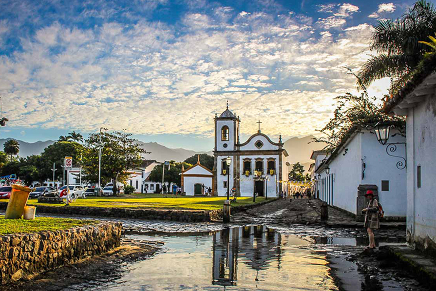
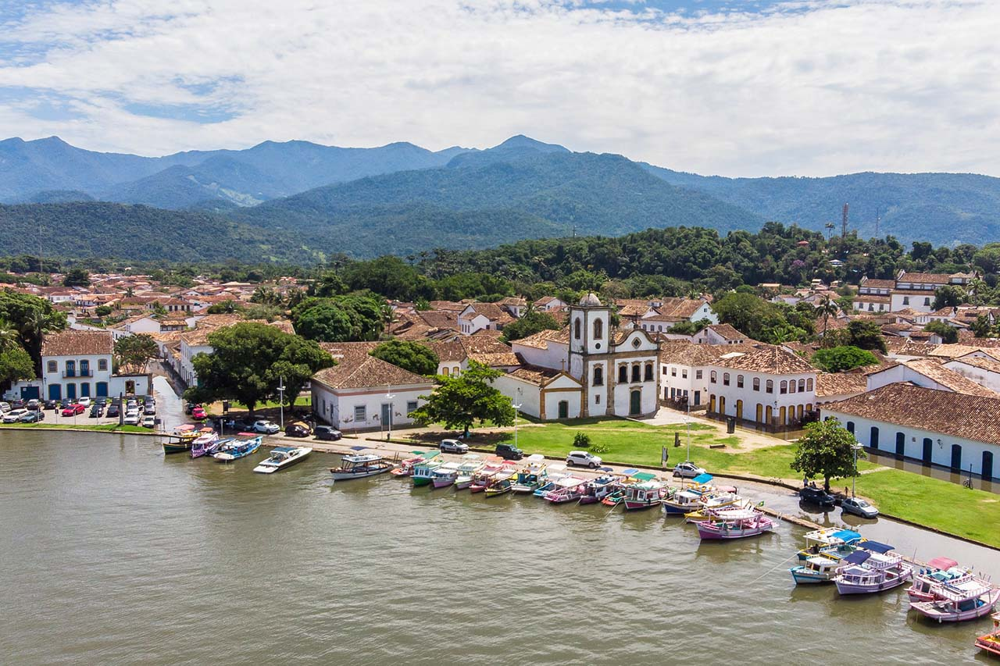

Paraty é um município brasileiro localizado no litoral sul do estado do Rio de Janeiro, distante 258 quilômetros da capital estadual, a cidade do Rio de Janeiro. Junto ao oceano Atlântico, o território municipal está a uma altitude média de apenas cinco metros do nível do mar. Atualmente, possui 930,7 quilômetros quadrados, com uma população de 39.965 habitantes [10], representando uma densidade demográfica de 35,6 habitantes por quilômetro quadrado. Segundo estimativas do Instituto Brasileiro de Geografia e Estatística – IBGE realizada em 2014, o mesmo ocupa a 43ª posição entre os municípios do estado do Rio por população. O seu Índice de Desenvolvimento Humano Municipal (IDHM) é de 0,693, segundo dados de 2010 do Programa das Nações Unidas para o Desenvolvimento – PNUD (publicados em 2013), o que é considerado "mediano". Sua sede distrital está localizada ao nível do mar, em terreno localizado entre os rios Perequê Açu e Mateus Nunes, tendo sido projetada levando em conta o fluxo das marés. Como resultado, muitas das ruas do núcleo histórico colonial de Paraty são periodicamente inundadas pelo mar. Em 5 de julho de 2019, uma porção do território no qual estão localizados o núcleo histórico colonial de Paraty e a Ilha Grande, em Angra dos Reis, foi declarada Patrimônio da Humanidade pela UNESCO, por sua integração excepcional entre valores associados ao patrimônio cultural e ao natural; constituindo-se então, o primeiro sítio misto do Brasil.
Cidade
Patrimônio Mundial
Com essa nomeação a região fica reconhecida como patrimônio natural e cultural, a área do Sítio Patrimônio Mundial compreende as seguintes unidades: o Parque Nacional da Serra da Bocaina, a Reserva Biológica Estadual da Praia do Sul, a Área de Proteção Ambiental de Cairuçu, o Centro Histórico de Paraty e o Morro da Vila Velha. A cidade de Paraty já era integrante da Rede de Cidades Criativas da UNESCO na categoria gastronomia e após esse reconhecimento comprova a riqueza da diversidade local. A região se forma pelo intercâmbio das culturas indígena, africana e caiçara que se expressam nos bens culturais da cidade, Paraty engloba uma fusão de características próprias do patrimônio material e imaterial. Herança e vida de povos tradicionais que usam a terra e o mar de forma sustentável, demonstrando a interação do homem com o meio ambiente. Ao se unir à Ilha Grande, o sítio torna-se ainda mais representativo com áreas de beleza natural excepcional. Critérios específicos apresentados ao Comitê do Patrimônio Mundial[11] fizeram a área ser declarada de importância para toda a humanidade, já que a região se formou pelo intercâmbio entre as culturas indígena, africana e caiçara que se expressam nos bens que usam a terra e o mar de forma sustentável, demonstrando a interação do homem com o meio ambiente; assim como, o fato de conter habitats naturais importantes e significativos para a conservação da diversidade biológica. Assim, o território reconhecido como patrimônio natural e cultural, compreende as unidades de proteção ambiental: Parque Nacional da Serra da Bocaina (Paraty/RJ e Cunha/SP), Reserva Biológica Estadual da Praia do Sul (Ilha Grande - Angra dos Reis/RJ); Parque Estadual da Ilha Grande (Ilha Grande - Angra dos Reis/RJ); Área de Proteção Ambiental de Cairuçu (Paraty/RJ); o Centro Histórico de Paraty e o Morro da Vila Velha (Paraty/RJ). O Município de Paraty apresenta referências culturais materiais e imateriais remanescentes do seu povoamento pré-histórico e de seu histórico colonial; conjugadas aos costumes e cultura das populações tradicionais que ainda habitam seu território. A cidade de Paraty integra a Rede de Cidades Criativas da UNESCO na categoria gastronomia, reconhecimento prévio que já comprovava a relevância internacional da diversidade local. Ao se unir à Ilha Grande, o sítio torna-se ainda mais representativo com áreas de grande riqueza e beleza naturais excepcionais.